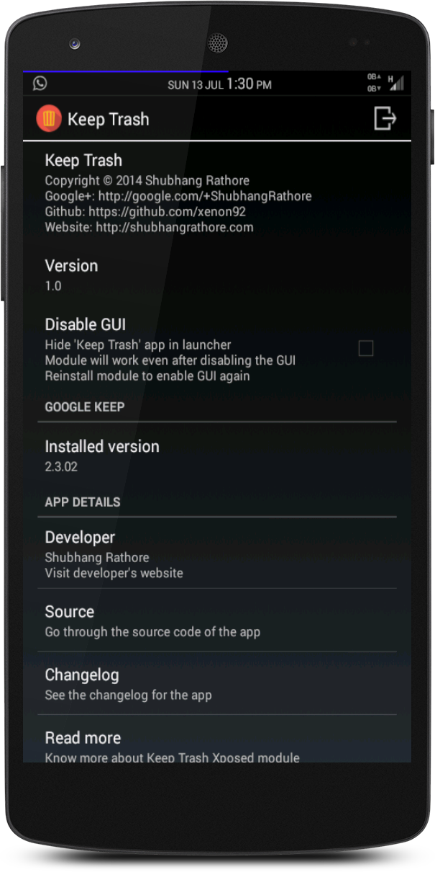

Keep Trash
An open source Xposed module for android, to move 'Delete', 'Archive', 'Show/Hide Checkboxes' or 'Share' menu options from 3-dot overflow menu to the action bar in official Google Keep app.
I use Google Keep a lot to jot down thoughts that come to my mind, thoughts that may come in handy in future. This leads to many many notes scattered all over the app.
To delete a note, I had to -
- Long tap the note
- Tap on the 3-dot overflow menu
- Tap on 'Delete'.
It was kind of frustrating for me to have an extra tap to open the 3-dot overflow menu just so that I could reach the 'Delete' button. Such was the case with a few more menu options that were hidden inside the overflow menu and were an extra tap away.
So I moved the buttons to the action bar. Now, to delete a note -
- Long tap the note
- Tap on 'Delete'
In v1.1, I implemented a customizable icon listing in the action bar when the note was selected in the official Google Keep app. Users can choose any combination, such as select only one among the menu icons listed below, choose any two, choose all three or choose none. Users can choose among the following icons -
- Archive
- Delete
- Share
In v1.2, I implemented a customizable icon listing in the action bar when the note was being edited in the official Google Keep app. Just like v1.1, users can select any combination among the menu items listed below -
- Archive
- Show/Hide Checkboxes
Users can select which icons they want to show in their Google Keep app action bar and customize the way they use Google Keep.
Screenshots
Keep Trash


Before

After

How to use?
- Install Xposed framework for android by the developer rovo89
- Install Keep Trash
- Enable Keep Trash in Xposed
Support
Bugs reports, suggestions and support can be found on XDA-developers thread for Keep Trash.
Requirements
- Xposed framework
- Android 4.0.3+
Downloads
Check the 'Releases' section in my Github source.
Check the 'Xposed module repository'
Source code
Source code of the app can be found at my Github repository.
Changelog
v1.2
- Ability to choose which icons (Archive or Show/Hide checkboxes) should show up in action bar when the note is being edited in the official Google Keep app (any combination can be selected)
- Add android L style floating button to open Google Keep from Keep Trash (thanx to FAB library)
- Change supported android version to 4.0.3+ (API 15+) (Google Keep supports 4.0.3+ only)
- Fix module description in Xposed Installer after install
- Add padding to "Share" icon to make it a bit smaller
- Set action bar color to blue
v1.1
NOTE - If you have previously disabled the GUI in v1.0, uninstall and reinstall Keep Trash to enable the new GUI to see the customization options.
- Ability to choose which icons you want to show up in official Google Keep's action bar (any combination from Archive, Delete and Share can be set. Any one among these, any two, all or none)
- Switch from Holo theme to Holo light with dark action bar
- Remove 'Disable GUI' checkbox
- Enable 'Open Google Keep in Play Store' permanently
- Code clean up
v1.0
- Initial release

License
The source code is licensed under GNU General Public License v3 (GPL v3)
Copyright
© 2014 Shubhang Rathore